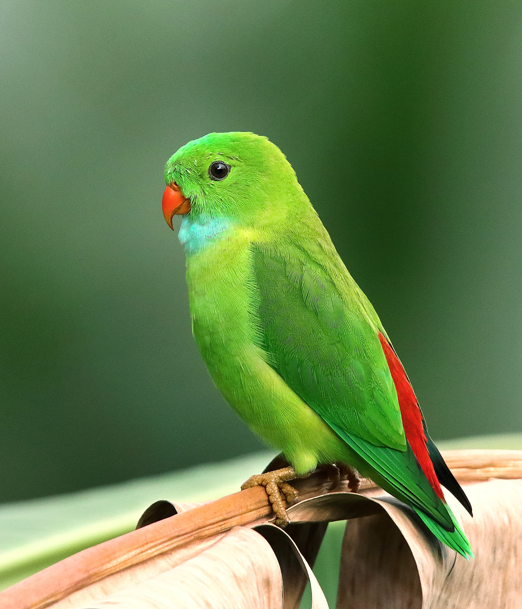

Animal adoption is a compassionate act that brings joy and fulfillment to both humans and animals. By adopting a pet, you provide a loving home to an animal in need. These furry friends, whether dogs, cats, or other animals, offer unwavering companionship and unconditional love. Each animal has a unique story, and by adopting, you become part of their journey. Experience the rewards of adopting and witness the transformation of a rescued animal into a beloved family member. Embrace the opportunity to make a difference in an animal's life by opening your heart and home to adoption.